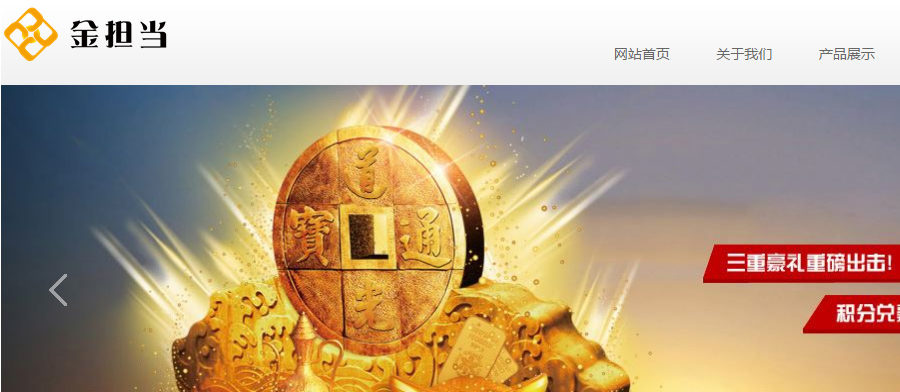

金担当-互联网金融微信端交互前端开发(已和客户沟通，需接单请联我（李大林）)
-

-
金担当-互联网金融微信端交互前端开发•项目目前情况
金融网站
项目进度：已和客服沟通，待接单
沟通日期：2016-11-21
页面个数：56个
开发人数：需要1-2个人开发
开发描述：后端用的Java，前端调用Java接口。
运行环境：后端Web容器-Tomcat
优码描述：已和商户进行沟通，该项目的需求文档就是做金担当的Wap版，目前PC版本已经做好了，页面有：56个
原始描述：已有微信版的UI和PC后台系统，通过技术实现做前端交互，调用后台接口，交付完整经测试通过、可运行系统，实现需求文档功能并且符合技术规范。目前已有前端原型设计、平台后台服务接口和第三方接口。
承接方式：
方式一：若1个人，结算时金额计算为：总金额 = 95%(团队人员) + 5%(最初接单人收取5%金额作为质量保证回头客客户关系维护)
方式二(二人)：负责人(做x%)+团队人员(做y%)，结算时金额计算为：总金额 = x%(负责人) + (y-5)%(团队人员) + 5%(最初接单人收取5%金额作为质量保证回头客客户关系维护)
方式三(二人)：负责人(做x%)+团队人员(做y%)，结算时金额计算为：总金额 = x%(负责人) + (y-z)%(团队人员) + z%(最初接单人收取z%金额作为质量保证回头客客户关系维护)(方式三是为了确保团队成员可以自行商量z的比例)
大鲲项目链接